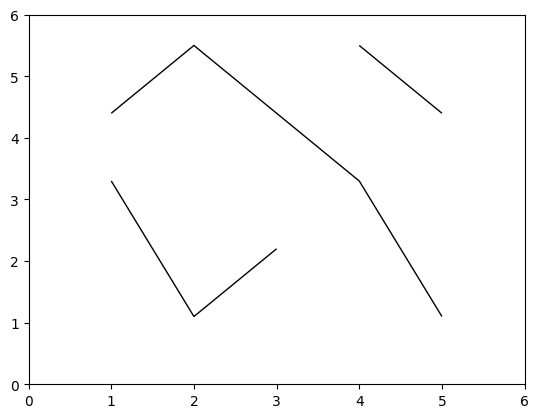

How to flatten arrays, especially for plotting#
In a data analysis, it is important to plot your data frequently, and the interactive nature of array-at-a-time functions facilitate that.
However, plotting views your data as a generic set or sequence—the structure of nested lists and records can’t be captured by standard plots. Histograms (including 2-dimensional heatmaps) take input data to be an unordered set, as do scatter plots. Connected-line plots, such as time-series, use the sequential order of the data, but there aren’t many visualizations that show nestedness. (Maybe there will be, in the future.)
As such, these standard plotting routines expect simple structures, either a single flat array (in which the order may be relevant or irrelevant) or several same-length arrays (in which the relative or absolute order is relevant). Encountering an Awkward Array, they may try to call np.asarray on it, which only works if the array can be made rectilinear or they may try to iterate over it in Python, which can be prohibitively slow if the dataset is large.
Scope of destructuring#
To destructure an array for plotting, you’ll want to
remove nested lists, definitely for variable-length ones (”
var *” in the type string) and possibly for regular ones as well (”N *” in the type string, whereNis an integer),remove record structures,
remove missing data
There are two functions that are responsible for flattening arrays: ak.flatten() with axis=None; and ak.ravel(); but you don’t want to apply them without thinking, because structure is important to the meaning of your data and you want to be able to interpret the plot. Destructuring is an information-losing operation, so your guidance is required to eliminate exactly the structure you want to eliminate, and there are several ways to do that, depending on what you want to do.
After destructuring, you might still need to call np.asarray on the output because the plotting library might not recognize an ak.Array as an array. You’ll probably also want to develop your destructuring on a commandline or a different Jupyter cell from the plotting library function call, to understand what structure the output has without the added complication of the plotting library’s error messages.
import awkward as ak
import numpy as np
ak.ravel#
First, let’s create an array with some interesting structure.
array = ak.Array(
[[{"x": 1.1, "y": [1]}, {"x": None, "y": [1, 2]}], [], [{"x": 3.3, "y": [1, 2, 3]}]]
)
array
[[{x: 1.1, y: [1]}, {x: None, y: [1, 2]}],
[],
[{x: 3.3, y: [1, 2, 3]}]]
------------------------------------------
type: 3 * var * {
x: ?float64,
y: var * int64
}As mentioned above, ak.ravel() is one of two functions that turns any array into a 1-dimensional array with no nested lists, no nested records.
ak.ravel(array)
[1.1, None, 3.3, 1, 1, 2, 1, 2, 3] ------------------ type: 9 * ?float64
Calling this function on an already flat array does nothing, so you don’t have to worry about what state your array had been in before you called it.
ak.ravel(ak.ravel(array))
[1.1, None, 3.3, 1, 1, 2, 1, 2, 3] ------------------ type: 9 * ?float64
Unlike ak.flatten(..., axis=None), ak.ravel() preserves None values at the leaves, meaning that functions which expect a simple array of numbers will usually raise an exception.
However, there are a few questions you should be asking yourself:
Did the nested lists have special meaning? What does the plot represent if I just concatenate them all?
Did the record fields have distinct meanings? In this example, what does it mean to put floating-point x values and nested-list y values in the same bucket of numbers to plot? Does it matter that there are more y values than x values? In most circumstances, you do not want to mix record fields in a plot.
ak.flatten with axis=None#
If ak.ravel() is a sledgehammer, then ak.flatten() with axis=None is a pile driver that turns any array into a 1-dimensional array with no nested lists, no nested records, and no missing data.
array = ak.Array(
[[{"x": 1.1, "y": [1]}, {"x": None, "y": [1, 2]}], [], [{"x": 3.3, "y": [1, 2, 3]}]]
)
array
[[{x: 1.1, y: [1]}, {x: None, y: [1, 2]}],
[],
[{x: 3.3, y: [1, 2, 3]}]]
------------------------------------------
type: 3 * var * {
x: ?float64,
y: var * int64
}ak.flatten(array, axis=None)
[1.1, 3.3, 1, 1, 2, 1, 2, 3] ----------------- type: 8 * float64
Like ak.ravel(), Calling this function on an already flat array does nothing, so you don’t have to worry about what state your array had been in before you called it.
ak.flatten(ak.flatten(array, axis=None), axis=None)
[1.1, 3.3, 1, 1, 2, 1, 2, 3] ----------------- type: 8 * float64
In addition to the concerns raised above, it is also important to consider whether the None values in your array are meaningful. For example, consider an array of x-axis and y-axis values. If only the y-axis contains None values, ak.flatten(y_values, axis=None) would produce an array that does not align with the flattened x-axis values.
x = ak.Array([[1, 2, 3], [4, 5, 6, 7]])
y = ak.Array([[8, None, 6], [5, None, None, 4]])
z = 2 * np.ravel(x) + np.ravel(y)
Selecting record fields#
A more controlled way to extract fields from a record is to project them by name.
array = ak.Array(
[
[{"x": 1.1, "y": [1], "z": "one"}, {"x": None, "y": [1, 2], "z": "two"}],
[],
[{"x": 3.3, "y": [1, 2, 3], "z": "three"}],
]
)
array
[[{x: 1.1, y: [1], z: 'one'}, {x: None, y: [1, 2], z: 'two'}],
[],
[{x: 3.3, y: [1, 2, 3], z: 'three'}]]
--------------------------------------------------------------
type: 3 * var * {
x: ?float64,
y: var * int64,
z: string
}If we want only the x field, we can ask for it as an attribute (because it’s a valid Python name) or with a string-valued slice:
array.x
[[1.1, None], [], [3.3]] ------------------------ type: 3 * var * ?float64
array["x"]
[[1.1, None], [], [3.3]] ------------------------ type: 3 * var * ?float64
This controls the biggest deficiency of ak.flatten() with axis=None, the mixing of data with different meanings.
ak.flatten(array.x, axis=None)
[1.1, 3.3] ----------------- type: 2 * float64
ak.flatten(array.y, axis=None)
[1, 1, 2, 1, 2, 3] --------------- type: 6 * int64
If some of your fields can be safely flattened—together into one set—and others can’t, you can use a list of strings to pick just the fields you want.
ak.flatten(array[["x", "y"]], axis=None)
[1.1, 3.3, 1, 1, 2, 1, 2, 3] ----------------- type: 8 * float64
(Careful! A tuple has a special meaning in slices, which doesn’t apply here.)
array[("x", "y")]
---------------------------------------------------------------------------
IndexError Traceback (most recent call last)
Cell In[15], line 1
----> 1 array[("x", "y")]
File ~/micromamba/envs/awkward-docs/lib/python3.11/site-packages/awkward/highlevel.py:1103, in Array.__getitem__(self, where)
1099 where = _normalize_named_slice(named_axis, where, ndim)
1101 NamedAxis.mapping = named_axis
-> 1103 indexed_layout = prepare_layout(self._layout._getitem(where, NamedAxis))
1105 if NamedAxis.mapping:
1106 return ak.operations.ak_with_named_axis._impl(
1107 indexed_layout,
1108 named_axis=NamedAxis.mapping,
(...)
1111 attrs=self._attrs,
1112 )
File ~/micromamba/envs/awkward-docs/lib/python3.11/site-packages/awkward/contents/content.py:643, in Content._getitem(self, where, named_axis)
634 named_axis.mapping = _named_axis
636 next = ak.contents.RegularArray(
637 this,
638 this.length,
639 1,
640 parameters=None,
641 )
--> 643 out = next._getitem_next(nextwhere[0], nextwhere[1:], None)
645 if out.length is not unknown_length and out.length == 0:
646 return out._getitem_nothing()
File ~/micromamba/envs/awkward-docs/lib/python3.11/site-packages/awkward/contents/regulararray.py:551, in RegularArray._getitem_next(self, head, tail, advanced)
543 return RegularArray(
544 nextcontent._getitem_next(nexthead, nexttail, nextadvanced),
545 nextsize,
546 self._length,
547 parameters=self._parameters,
548 )
550 elif isinstance(head, str):
--> 551 return self._getitem_next_field(head, tail, advanced)
553 elif isinstance(head, list):
554 return self._getitem_next_fields(head, tail, advanced)
File ~/micromamba/envs/awkward-docs/lib/python3.11/site-packages/awkward/contents/content.py:320, in Content._getitem_next_field(self, head, tail, advanced)
313 def _getitem_next_field(
314 self,
315 head: SliceItem | tuple,
316 tail: tuple[SliceItem, ...],
317 advanced: Index | None,
318 ):
319 nexthead, nexttail = ak._slicing.head_tail(tail)
--> 320 return self._getitem_field(head)._getitem_next(nexthead, nexttail, advanced)
File ~/micromamba/envs/awkward-docs/lib/python3.11/site-packages/awkward/contents/regulararray.py:551, in RegularArray._getitem_next(self, head, tail, advanced)
543 return RegularArray(
544 nextcontent._getitem_next(nexthead, nexttail, nextadvanced),
545 nextsize,
546 self._length,
547 parameters=self._parameters,
548 )
550 elif isinstance(head, str):
--> 551 return self._getitem_next_field(head, tail, advanced)
553 elif isinstance(head, list):
554 return self._getitem_next_fields(head, tail, advanced)
File ~/micromamba/envs/awkward-docs/lib/python3.11/site-packages/awkward/contents/content.py:320, in Content._getitem_next_field(self, head, tail, advanced)
313 def _getitem_next_field(
314 self,
315 head: SliceItem | tuple,
316 tail: tuple[SliceItem, ...],
317 advanced: Index | None,
318 ):
319 nexthead, nexttail = ak._slicing.head_tail(tail)
--> 320 return self._getitem_field(head)._getitem_next(nexthead, nexttail, advanced)
File ~/micromamba/envs/awkward-docs/lib/python3.11/site-packages/awkward/contents/regulararray.py:316, in RegularArray._getitem_field(self, where, only_fields)
312 def _getitem_field(
313 self, where: str | SupportsIndex, only_fields: tuple[str, ...] = ()
314 ) -> Content:
315 return RegularArray(
--> 316 self._content._getitem_field(where, only_fields),
317 self._size,
318 self._length,
319 parameters=None,
320 )
File ~/micromamba/envs/awkward-docs/lib/python3.11/site-packages/awkward/contents/listoffsetarray.py:340, in ListOffsetArray._getitem_field(self, where, only_fields)
335 def _getitem_field(
336 self, where: str | SupportsIndex, only_fields: tuple[str, ...] = ()
337 ) -> Content:
338 return ListOffsetArray(
339 self._offsets,
--> 340 self._content._getitem_field(where, only_fields),
341 parameters=None,
342 )
File ~/micromamba/envs/awkward-docs/lib/python3.11/site-packages/awkward/contents/indexedoptionarray.py:337, in IndexedOptionArray._getitem_field(self, where, only_fields)
332 def _getitem_field(
333 self, where: str | SupportsIndex, only_fields: tuple[str, ...] = ()
334 ) -> Content:
335 return IndexedOptionArray.simplified(
336 self._index,
--> 337 self._content._getitem_field(where, only_fields),
338 parameters=None,
339 )
File ~/micromamba/envs/awkward-docs/lib/python3.11/site-packages/awkward/contents/numpyarray.py:338, in NumpyArray._getitem_field(self, where, only_fields)
335 def _getitem_field(
336 self, where: str | SupportsIndex, only_fields: tuple[str, ...] = ()
337 ) -> Content:
--> 338 raise ak._errors.index_error(self, where, "not an array of records")
IndexError: cannot slice NumpyArray (of length 2) with 'y': not an array of records
This error occurred while attempting to slice
<Array [[{x: 1.1, y: [1], ...}, ...], ...] type='3 * var * {x: ?float64...'>
with
('x', 'y')
If you have records inside of records, you can extract them with nested projection if they have common names.
array = ak.Array(
[
{"x": {"up": 1, "down": -1}, "y": {"up": 1.1, "down": -1.1}},
{"x": {"up": 2, "down": -2}, "y": {"up": 2.2, "down": -2.2}},
{"x": {"up": 3, "down": -3}, "y": {"up": 3.3, "down": -3.3}},
{"x": {"up": 4, "down": -4}, "y": {"up": 4.4, "down": -4.4}},
]
)
array
[{x: {up: 1, down: -1}, y: {up: 1.1, ...}},
{x: {up: 2, down: -2}, y: {up: 2.2, ...}},
{x: {up: 3, down: -3}, y: {up: 3.3, ...}},
{x: {up: 4, down: -4}, y: {up: 4.4, ...}}]
-------------------------------------------
type: 4 * {
x: {
up: int64,
down: int64
},
y: {
up: float64,
down: float64
}
}ak.flatten(array[["x", "y"], "up"], axis=None)
[1, 2, 3, 4, 1.1, 2.2, 3.3, 4.4] ----------------- type: 8 * float64
ak.flatten for one axis#
Since axis=None is so dangerous, the default value of ak.flatten() is axis=1. This flattens only the first nested dimension.
ak.flatten(ak.Array([[0, 1, 2], [], [3, 4], [5], [6, 7, 8, 9]]))
[0, 1, 2, 3, 4, 5, 6, 7, 8, 9] ---------------- type: 10 * int64
It also removes missing values in the axis that is being flattened because flattening considers a missing list like an empty list.
ak.flatten(ak.Array([[0, 1, 2], None, [3, 4], [5], [6, 7, 8, 9]]))
[0, 1, 2, 3, 4, 5, 6, 7, 8, 9] ---------------- type: 10 * int64
It does not flatten or remove missing values from any other axis.
ak.flatten(ak.Array([[[0, 1, 2, 3, 4]], [], [[5], [6, 7, 8, 9]]]))
[[0, 1, 2, 3, 4], [5], [6, 7, 8, 9]] --------------------- type: 3 * var * int64
ak.flatten(ak.Array([[[0, 1, 2, None]], [], [[5], [6, 7, 8, 9]]]))
[[0, 1, 2, None], [5], [6, 7, 8, 9]] ---------------------- type: 3 * var * ?int64
Moreover, you can’t flatten already-flat data because a 1-dimensional array does not have an axis=1. (axis starts counting at 0.)
ak.flatten(ak.Array([1, 2, 3, 4, 5]))
---------------------------------------------------------------------------
AxisError Traceback (most recent call last)
Cell In[22], line 1
----> 1 ak.flatten(ak.Array([1, 2, 3, 4, 5]))
File ~/micromamba/envs/awkward-docs/lib/python3.11/site-packages/awkward/_dispatch.py:64, in named_high_level_function.<locals>.dispatch(*args, **kwargs)
62 # Failed to find a custom overload, so resume the original function
63 try:
---> 64 next(gen_or_result)
65 except StopIteration as err:
66 return err.value
File ~/micromamba/envs/awkward-docs/lib/python3.11/site-packages/awkward/operations/ak_flatten.py:178, in flatten(array, axis, highlevel, behavior, attrs)
175 yield (array,)
177 # Implementation
--> 178 return _impl(array, axis, highlevel, behavior, attrs)
File ~/micromamba/envs/awkward-docs/lib/python3.11/site-packages/awkward/operations/ak_flatten.py:257, in _impl(array, axis, highlevel, behavior, attrs)
255 out = apply(layout)
256 else:
--> 257 out = ak._do.flatten(layout, axis)
259 wrapped_out = ctx.wrap(
260 out,
261 highlevel=highlevel,
262 )
264 # propagate named axis to output
265 # if axis == None: use strategy "remove all" (see: awkward._namedaxis)
File ~/micromamba/envs/awkward-docs/lib/python3.11/site-packages/awkward/_do.py:196, in flatten(layout, axis)
195 def flatten(layout: Content, axis: int = 1) -> Content:
--> 196 offsets, flattened = layout._offsets_and_flattened(axis, 1)
197 return flattened
File ~/micromamba/envs/awkward-docs/lib/python3.11/site-packages/awkward/contents/numpyarray.py:451, in NumpyArray._offsets_and_flattened(self, axis, depth)
448 return self.to_RegularArray()._offsets_and_flattened(axis, depth)
450 else:
--> 451 raise AxisError(f"axis={axis} exceeds the depth of this array ({depth})")
AxisError: axis=1 exceeds the depth of this array (1)
This error occurred while calling
ak.flatten(
<Array [1, 2, 3, 4, 5] type='5 * int64'>
)
axis=0 is a valid option for ak.flatten(), but since there can’t be any lists at this level, it only removes missing values.
ak.flatten(ak.Array([1, 2, 3, None, None, 4, 5]), axis=0)
[1, 2, 3, 4, 5] --------------- type: 5 * int64
Selecting one element from each list#
Flattening removes list structure without removing values. Often, you want to do the opposite of that: you want to plot one element from each list. This makes the plot “aware” of your list structure.
This kind of operation is usually just a slice.
array = ak.Array([[0, 1, 2], [3, 4], [5], [6, 7, 8, 9]])
array
[[0, 1, 2], [3, 4], [5], [6, 7, 8, 9]] --------------------- type: 4 * var * int64
array[:, 0]
[0, 3, 5, 6] --------------- type: 4 * int64
The above syntax selects all lists from the array (axis=0) and the first element from each list (axis=1). We could have as easily selected the last:
array[:, -1]
[2, 4, 5, 9] --------------- type: 4 * int64
A plot made from ak.flatten(array) would be a plot of all numbers with no knowledge of lists; a plot made from array[:, 0] would be a plot of lists, as represented by the first element in each. It depends on what you want to plot.
What if you get this error?
array = ak.Array([[0, 1, 2], [], [3, 4], [5], [6, 7, 8, 9]])
array
[[0, 1, 2], [], [3, 4], [5], [6, 7, 8, 9]] --------------------- type: 5 * var * int64
array[:, 0]
---------------------------------------------------------------------------
IndexError Traceback (most recent call last)
Cell In[28], line 1
----> 1 array[:, 0]
File ~/micromamba/envs/awkward-docs/lib/python3.11/site-packages/awkward/highlevel.py:1103, in Array.__getitem__(self, where)
1099 where = _normalize_named_slice(named_axis, where, ndim)
1101 NamedAxis.mapping = named_axis
-> 1103 indexed_layout = prepare_layout(self._layout._getitem(where, NamedAxis))
1105 if NamedAxis.mapping:
1106 return ak.operations.ak_with_named_axis._impl(
1107 indexed_layout,
1108 named_axis=NamedAxis.mapping,
(...)
1111 attrs=self._attrs,
1112 )
File ~/micromamba/envs/awkward-docs/lib/python3.11/site-packages/awkward/contents/content.py:643, in Content._getitem(self, where, named_axis)
634 named_axis.mapping = _named_axis
636 next = ak.contents.RegularArray(
637 this,
638 this.length,
639 1,
640 parameters=None,
641 )
--> 643 out = next._getitem_next(nextwhere[0], nextwhere[1:], None)
645 if out.length is not unknown_length and out.length == 0:
646 return out._getitem_nothing()
File ~/micromamba/envs/awkward-docs/lib/python3.11/site-packages/awkward/contents/regulararray.py:518, in RegularArray._getitem_next(self, head, tail, advanced)
512 nextcontent = self._content._carry(nextcarry, True)
514 if advanced is None or (
515 advanced.length is not unknown_length and advanced.length == 0
516 ):
517 return RegularArray(
--> 518 nextcontent._getitem_next(nexthead, nexttail, advanced),
519 nextsize,
520 self._length,
521 parameters=self._parameters,
522 )
523 else:
524 nextadvanced = ak.index.Index64.empty(nextcarry.length, index_nplike)
File ~/micromamba/envs/awkward-docs/lib/python3.11/site-packages/awkward/contents/listarray.py:721, in ListArray._getitem_next(self, head, tail, advanced)
715 head = ak._slicing.normalize_integer_like(head)
716 assert (
717 nextcarry.nplike is self._backend.index_nplike
718 and self._starts.nplike is self._backend.index_nplike
719 and self._stops.nplike is self._backend.index_nplike
720 )
--> 721 self._maybe_index_error(
722 self._backend[
723 "awkward_ListArray_getitem_next_at",
724 nextcarry.dtype.type,
725 self._starts.dtype.type,
726 self._stops.dtype.type,
727 ](
728 nextcarry.data,
729 self._starts.data,
730 self._stops.data,
731 lenstarts,
732 head,
733 ),
734 slicer=head,
735 )
736 nextcontent = self._content._carry(nextcarry, True)
737 return nextcontent._getitem_next(nexthead, nexttail, advanced)
File ~/micromamba/envs/awkward-docs/lib/python3.11/site-packages/awkward/contents/content.py:289, in Content._maybe_index_error(self, error, slicer)
287 else:
288 message = self._backend.format_kernel_error(error)
--> 289 raise ak._errors.index_error(self, slicer, message)
IndexError: cannot slice ListArray (of length 5) with array(0): index out of range while attempting to get index 0 (in compiled code: https://github.com/scikit-hep/awkward/blob/awkward-cpp-40/awkward-cpp/src/cpu-kernels/awkward_ListArray_getitem_next_at.cpp#L21)
This error occurred while attempting to slice
<Array [[0, 1, 2], [], ..., [5], [6, 7, 8, 9]] type='5 * var * int64'>
with
(:, 0)
It says that it can’t get element 0 of one of the lists, and that’s because this array contains an empty list.
One way to deal with that is to take a range-slice, rather than ask for an individual element from each list.
array[:, :1]
[[0], [], [3], [5], [6]] --------------------- type: 5 * var * int64
But this array still has structure, so you can flatten it as an additional step.
ak.flatten(array[:, :1])
[0, 3, 5, 6] --------------- type: 4 * int64
Alternatively, you may want to attack the problem head-on: the issue is that some lists have too few elements, so why not remove those lists with an explicit slice? The ak.num() function tells us the length of each nested list.
ak.num(array)
[3, 0, 2, 1, 4] --------------- type: 5 * int64
ak.num(array) > 0
[True, False, True, True, True] -------------- type: 5 * bool
Slicing the first dimension with this would ensure that the second dimension always has the element we seek.
array[ak.num(array) > 0, 0]
[0, 3, 5, 6] --------------- type: 4 * int64
The same applies if we’re taking the last element:
array[ak.num(array) > 0, -1]
[2, 4, 5, 9] --------------- type: 4 * int64
You can also do fancy things, requesting both the first and last element of each list, as long as it doesn’t run afoul of slicing rules (which were constrained to match NumPy’s in cases that overlap).
array[
ak.num(array) > 0, [0, -1]
] # these two arrays have different lengths, can't be broadcasted as in NumPy advanced slicing
---------------------------------------------------------------------------
ValueError Traceback (most recent call last)
Cell In[35], line 1
----> 1 array[
2 ak.num(array) > 0, [0, -1]
3 ] # these two arrays have different lengths, can't be broadcasted as in NumPy advanced slicing
File ~/micromamba/envs/awkward-docs/lib/python3.11/site-packages/awkward/highlevel.py:1103, in Array.__getitem__(self, where)
1099 where = _normalize_named_slice(named_axis, where, ndim)
1101 NamedAxis.mapping = named_axis
-> 1103 indexed_layout = prepare_layout(self._layout._getitem(where, NamedAxis))
1105 if NamedAxis.mapping:
1106 return ak.operations.ak_with_named_axis._impl(
1107 indexed_layout,
1108 named_axis=NamedAxis.mapping,
(...)
1111 attrs=self._attrs,
1112 )
File ~/micromamba/envs/awkward-docs/lib/python3.11/site-packages/awkward/contents/content.py:578, in Content._getitem(self, where, named_axis)
576 items = ak._slicing.normalise_items(where, backend)
577 # Prepare items for advanced indexing (e.g. via broadcasting)
--> 578 nextwhere = ak._slicing.prepare_advanced_indexing(items, backend)
580 # Handle named axis
581 # first expand the ellipsis to colons in nextwhere,
582 # copy nextwhere to not pollute the original
583 _nextwhere = tuple(nextwhere)
File ~/micromamba/envs/awkward-docs/lib/python3.11/site-packages/awkward/_slicing.py:118, in prepare_advanced_indexing(items, backend)
116 # Then broadcast the index items
117 nplike = backend.index_nplike
--> 118 broadcasted = nplike.broadcast_arrays(*[nplike.asarray(x) for x in broadcastable])
120 # And re-assemble the index with the broadcasted items
121 prepared = []
File ~/micromamba/envs/awkward-docs/lib/python3.11/site-packages/awkward/_nplikes/array_module.py:281, in ArrayModuleNumpyLike.broadcast_arrays(self, *arrays)
279 def broadcast_arrays(self, *arrays: ArrayLikeT) -> list[ArrayLikeT]:
280 assert not any(isinstance(x, PlaceholderArray) for x in arrays)
--> 281 return self._module.broadcast_arrays(*arrays)
File ~/micromamba/envs/awkward-docs/lib/python3.11/site-packages/numpy/lib/_stride_tricks_impl.py:551, in broadcast_arrays(subok, *args)
544 # nditer is not used here to avoid the limit of 32 arrays.
545 # Otherwise, something like the following one-liner would suffice:
546 # return np.nditer(args, flags=['multi_index', 'zerosize_ok'],
547 # order='C').itviews
549 args = tuple(np.array(_m, copy=None, subok=subok) for _m in args)
--> 551 shape = _broadcast_shape(*args)
553 if all(array.shape == shape for array in args):
554 # Common case where nothing needs to be broadcasted.
555 return args
File ~/micromamba/envs/awkward-docs/lib/python3.11/site-packages/numpy/lib/_stride_tricks_impl.py:431, in _broadcast_shape(*args)
426 """Returns the shape of the arrays that would result from broadcasting the
427 supplied arrays against each other.
428 """
429 # use the old-iterator because np.nditer does not handle size 0 arrays
430 # consistently
--> 431 b = np.broadcast(*args[:32])
432 # unfortunately, it cannot handle 32 or more arguments directly
433 for pos in range(32, len(args), 31):
434 # ironically, np.broadcast does not properly handle np.broadcast
435 # objects (it treats them as scalars)
436 # use broadcasting to avoid allocating the full array
ValueError: shape mismatch: objects cannot be broadcast to a single shape. Mismatch is between arg 0 with shape (5,) and arg 1 with shape (2,).
This error occurred while attempting to slice
<Array [[0, 1, 2], [], ..., [5], [6, 7, 8, 9]] type='5 * var * int64'>
with
(<Array [True, False, True, True, True] type='5 * bool'>, [0, -1])
array[ak.num(array) > 0][:, [0, -1]] # so just put them in different slices
[[0, 2], [3, 4], [5, 5], [6, 9]] ------------------- type: 4 * 2 * int64
And then flatten the result (if necessary—the shape is regular; some plotting libraries would interpret it as a single set of numbers).
ak.flatten(array[ak.num(array) > 0][:, [0, -1]])
[0, 2, 3, 4, 5, 5, 6, 9] --------------- type: 8 * int64
Aggregating each list#
Reductions should be familiar to users of SQL and Pandas; after grouping data by some quantity, one must apply some aggregating operation on each group to get one number for each group. The one-element slices of the previous section are like SQL’s FIRST_VALUE and LAST_VALUE, which is a special case of reducing.
The architypical aggregation function is “sum,” which reduces a list by adding up its values. ak.sum() and its relatives, ak.prod() (product/multiplication), ak.mean(), etc., are all reducers in Awkward Array.
Following NumPy, their default axis is None, but for this application, you’ll need to specify an explicit axis.
array = ak.Array([[0, 1, 2], [], [3, 4], [5], [6, 7, 8, 9]])
array
[[0, 1, 2], [], [3, 4], [5], [6, 7, 8, 9]] --------------------- type: 5 * var * int64
ak.sum(array, axis=1)
[3, 0, 7, 5, 30] --------------- type: 5 * int64
Some of these are not defined for empty lists, so you’ll need to either replace the missing values with ak.fill_none() or flatten them.
ak.mean(array, axis=1)
[1, nan, 3.5, 5, 7.5] ----------------- type: 5 * float64
ak.fill_none(ak.mean(array, axis=1), 0) # fill with zero
[1, nan, 3.5, 5, 7.5] ----------------- type: 5 * float64
ak.fill_none(ak.mean(array, axis=1), ak.mean(array)) # fill with the mean of all
[1, nan, 3.5, 5, 7.5] ----------------- type: 5 * float64
ak.flatten(ak.mean(array, axis=1), axis=0)
[1, nan, 3.5, 5, 7.5] ----------------- type: 5 * float64
Each of these has a different effect: filling with 0 puts an identifiable value in the plot (a peak at 0 if it’s a histogram), filling with the overall mean imputes a value in missing cases, flattening away the missing values reduces the number of entries in the plot. Each of these has a different meaning when interpreting your plot!
Minimizing/maximizing over each list#
Minimizing and maximizing are also reducers, ak.min() and ak.max() (and ak.ptp() for the peak-to-peak difference between the minimum and maximum).
They deserve their own section because they are an important case.
array = ak.Array([[0, 2, 1], [], [4, 3], [5], [8, 6, 7, 9]])
array
[[0, 2, 1], [], [4, 3], [5], [8, 6, 7, 9]] --------------------- type: 5 * var * int64
ak.min(array, axis=1)
[0, None, 3, 5, 6] ---------------- type: 5 * ?int64
ak.max(array, axis=1)
[2, None, 4, 5, 9] ---------------- type: 5 * ?int64
As before, they aren’t defined for empty lists, so you’ll have to choose a method to eliminate the missing values.
Sometimes, you want the “top N” elements from each list, rather than the “top 1.” Awkward Array doesn’t (yet) have a function for the “top N” elements, but it can be done with ak.sort() and a slice.
ak.sort(array, axis=1)
[[0, 1, 2], [], [3, 4], [5], [6, 7, 8, 9]] --------------------- type: 5 * var * int64
ak.sort(array, axis=1)[:, -2:]
[[1, 2], [], [3, 4], [5], [8, 9]] --------------------- type: 5 * var * int64
We still have work to do: some of these lists are shorter than the 2 elements we asked for. What should be done with them? Eliminate all lists with fewer than two elements?
ak.sort(array[ak.num(array) >= 2], axis=1)[:, -2:]
[[1, 2], [3, 4], [8, 9]] --------------------- type: 3 * var * int64
Or just concatenate everything so that we don’t lose the lists with only one value (5 in this example)?
ak.flatten(ak.sort(array, axis=1)[:, -2:])
[1, 2, 3, 4, 5, 8, 9] --------------- type: 7 * int64
Minimizing/maximizing lists of records#
Unlike numbers, records do not have an ordering: you cannot call ak.min() on an array of records. But usually, what you want to do instead is to find the minimum or maximum of some quantity calculated from the records and pick records (or record fields) from that.
array = ak.Array(
[
[
{"x": 2, "y": 2, "z": 2.2},
{"x": 1, "y": 1, "z": 1.1},
{"x": 3, "y": 3, "z": 3.3},
],
[],
[{"x": 5, "y": 5, "z": 5.5}, {"x": 4, "y": 4, "z": 4.4}],
[
{"x": 7, "y": 7, "z": 7.7},
{"x": 9, "y": 9, "z": 9.9},
{"x": 8, "y": 8, "z": 8.8},
{"x": 6, "y": 6, "z": 6.6},
],
]
)
array
[[{x: 2, y: 2, z: 2.2}, {x: 1, y: 1, z: 1.1}, {x: 3, y: 3, z: 3.3}],
[],
[{x: 5, y: 5, z: 5.5}, {x: 4, y: 4, z: 4.4}],
[{x: 7, y: 7, z: 7.7}, {x: 9, y: 9, z: 9.9}, {...}, {x: 6, y: 6, z: 6.6}]]
---------------------------------------------------------------------------
type: 4 * var * {
x: int64,
y: int64,
z: float64
}The ak.argmin() and ak.argmax() functions return the integer index where the minimum or maximum of some numeric formula can be found.
np.sqrt(array.x**2 + array.y**2)
[[2.83, 1.41, 4.24], [], [7.07, 5.66], [9.9, 12.7, 11.3, 8.49]] ------------------------- type: 4 * var * float64
ak.argmax(np.sqrt(array.x**2 + array.y**2), axis=1)
[2, None, 0, 1] ---------------- type: 4 * ?int64
These integer indexes can be used as slices if they don’t eliminate a dimension, which can be requested via keepdims=True. This makes a length-1 list for each reduced output.
maximize_by = ak.argmax(np.sqrt(array.x**2 + array.y**2), axis=1, keepdims=True)
maximize_by
[[2], [None], [0], [1]] -------------------- type: 4 * 1 * ?int64
Applying this to the original array, we get the “best” record in each list, according to maximize_by.
array[maximize_by]
[[{x: 3, y: 3, z: 3.3}],
[None],
[{x: 5, y: 5, z: 5.5}],
[{x: 9, y: 9, z: 9.9}]]
------------------------
type: 4 * var * ?{
x: int64,
y: int64,
z: float64
}array[maximize_by].to_list()
[[{'x': 3, 'y': 3, 'z': 3.3}],
[None],
[{'x': 5, 'y': 5, 'z': 5.5}],
[{'x': 9, 'y': 9, 'z': 9.9}]]
This still has list structures and missing values, so it’s ready for ak.flatten(), assuming that we extract the appropriate record field to plot.
ak.flatten(array[maximize_by].z, axis=None)
[3.3, 5.5, 9.9] ----------------- type: 3 * float64
Concatenating independently restructured arrays#
Sometimes, what you want to do can’t be a single expression. Suppose we have this data:
array = ak.Array(
[[{"x": 1.1, "y": [1]}, {"x": 2.2, "y": [1, 2]}], [], [{"x": 3.3, "y": [1, 2, 3]}]]
)
array
[[{x: 1.1, y: [1]}, {x: 2.2, y: [1, 2]}],
[],
[{x: 3.3, y: [1, 2, 3]}]]
-----------------------------------------
type: 3 * var * {
x: float64,
y: var * int64
}and we want to combine all x values and the maximum y value in a plot. This requires a different expression on array.x from array.y.
ak.flatten(array.x)
[1.1, 2.2, 3.3] ----------------- type: 3 * float64
ak.flatten(ak.max(array.y, axis=2), axis=None)
[1, 2, 3] --------------- type: 3 * int64
To get all of these into one array (because the plotting function only accepts one argument), you’ll need to ak.concatenate() them.
ak.concatenate(
[
ak.flatten(array.x),
ak.flatten(ak.max(array.y, axis=2), axis=None),
]
)
[1.1, 2.2, 3.3, 1, 2, 3] ----------------- type: 6 * float64
Maintaining alignment between arrays with missing values#
Dropping missing values with ak.flatten() doesn’t keep track of where they were removed. This is a problem if the plotting library takes separate sequences for the x-axis and y-axis, and these must be aligned.
Instead of ak.flatten(), you can use ak.is_none().
array = ak.Array(
[
{"x": 1, "y": 5.5},
{"x": 2, "y": 3.3},
{"x": None, "y": 2.2},
{"x": 4, "y": None},
{"x": 5, "y": 1.1},
]
)
array
[{x: 1, y: 5.5},
{x: 2, y: 3.3},
{x: None, y: 2.2},
{x: 4, y: None},
{x: 5, y: 1.1}]
-------------------
type: 5 * {
x: ?int64,
y: ?float64
}ak.is_none(array.x)
[False, False, True, False, False] -------------- type: 5 * bool
ak.is_none(array.y)
[False, False, False, True, False] -------------- type: 5 * bool
to_keep = ~(ak.is_none(array.x) | ak.is_none(array.y))
to_keep
[True, True, False, False, True] -------------- type: 5 * bool
array.x[to_keep], array.y[to_keep]
(<Array [1, 2, 5] type='3 * ?int64'>,
<Array [5.5, 3.3, 1.1] type='3 * ?float64'>)
Actually drawing structure#
If need be, you can change the plotter to match the data.
array = ak.Array(
[
[{"x": 1, "y": 3.3}, {"x": 2, "y": 1.1}, {"x": 3, "y": 2.2}],
[],
[{"x": 4, "y": 5.5}, {"x": 5, "y": 4.4}],
[
{"x": 5, "y": 1.1},
{"x": 4, "y": 3.3},
{"x": 2, "y": 5.5},
{"x": 1, "y": 4.4},
],
]
)
array
[[{x: 1, y: 3.3}, {x: 2, y: 1.1}, {x: 3, y: 2.2}],
[],
[{x: 4, y: 5.5}, {x: 5, y: 4.4}],
[{x: 5, y: 1.1}, {x: 4, y: 3.3}, {x: 2, y: 5.5}, {x: 1, y: 4.4}]]
------------------------------------------------------------------
type: 4 * var * {
x: int64,
y: float64
}import matplotlib.pyplot as plt
import matplotlib.path
import matplotlib.patches
fig, ax = plt.subplots()
for line in array:
if len(line) > 0:
vertices = np.dstack([np.asarray(line.x), np.asarray(line.y)])[0]
codes = [matplotlib.path.Path.MOVETO] + [matplotlib.path.Path.LINETO] * (
len(line) - 1
)
path = matplotlib.path.Path(vertices, codes)
ax.add_patch(matplotlib.patches.PathPatch(path, facecolor="none"))
ax.set_xlim(0, 6)
ax.set_ylim(0, 6);

(The above example assumes that len(array) is small enough to iterate over in Python, but vectorizes over each list in the array. It was adapted from the Matplotlib path tutorial.)